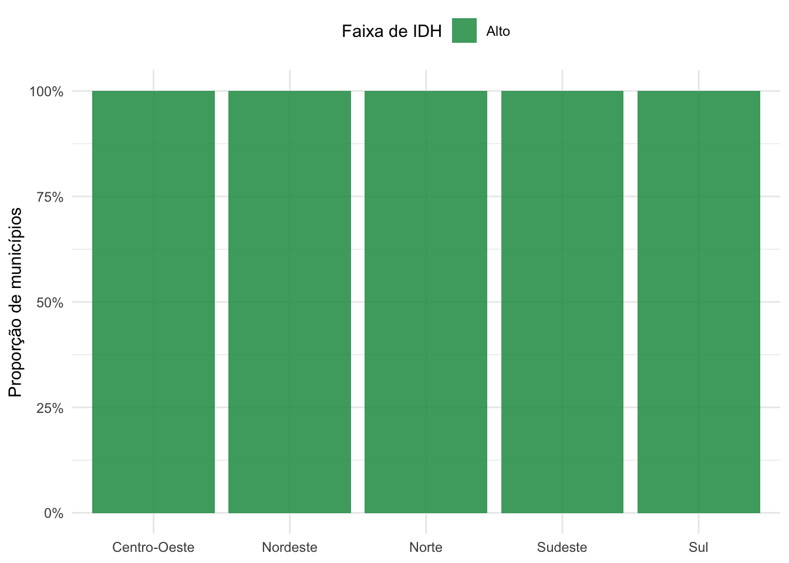
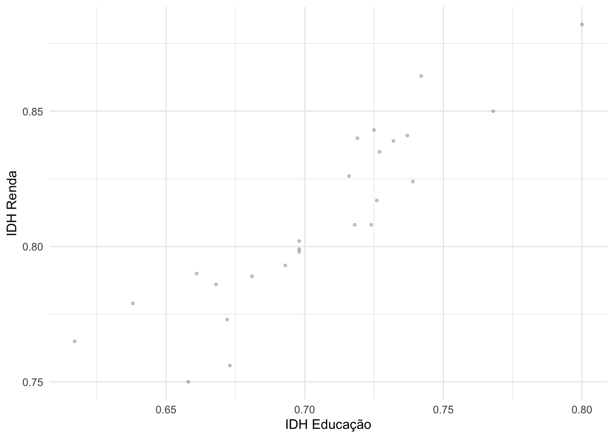
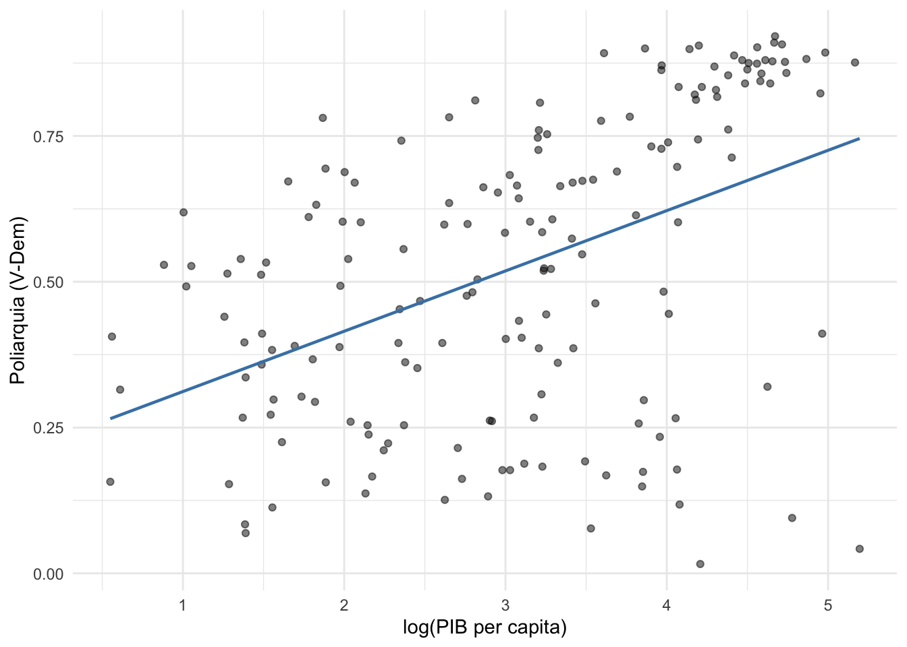
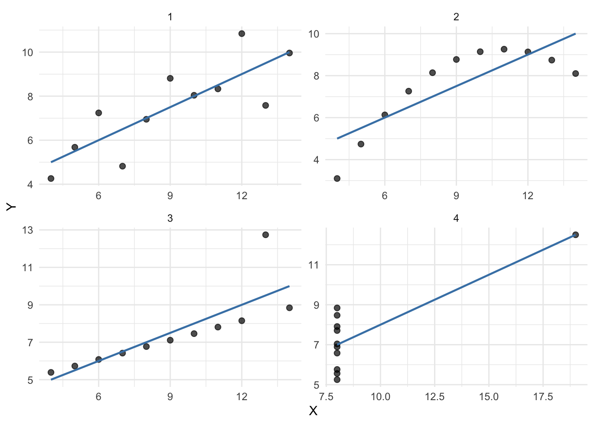
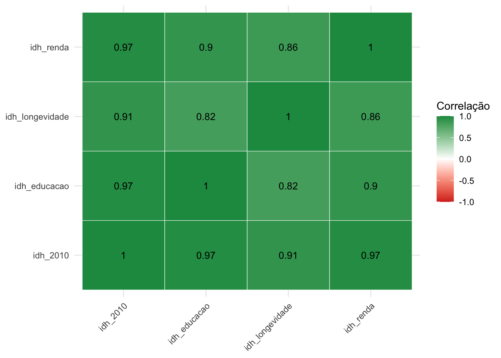

Capítulo 8 Correlação e Associação
Objetivos do capítulo
- Compreender o conceito de covariância e correlação
- Calcular e interpretar o coeficiente de correlação de Pearson
- Analisar associação entre variáveis categóricas (tabelas de contingência, qui-quadrado)
- Entender por que correlação não implica causalidade
- Visualizar relações entre variáveis com scatterplots
8.1 Examinando relações entre variáveis
No capítulo anterior, descrevemos variáveis uma por vez: média, mediana, desvio-padrão, histogramas. Teorias em ciência política, porém, são sobre relações entre variáveis. Democracia causa crescimento? Escolaridade aumenta participação política? Renda afeta o voto?
Para avaliar essas relações, precisamos examinar como duas variáveis se comportam juntas. Este capítulo apresenta as ferramentas para isso: tabelas de contingência (para variáveis categóricas), scatterplots, covariância e correlação (para variáveis contínuas). São ferramentas descritivas, que medem associação, não causalidade. A diferença será discutida na última seção do capítulo.
Vamos carregar os dados que usaremos:
8.2 Associação entre variáveis categóricas
Quando ambas as variáveis são categóricas, a ferramenta básica é a tabela de contingência (ou crosstab): uma tabela que cruza as categorias de uma variável com as categorias da outra.
8.2.1 Tabelas de contingência
Considere a relação entre região do Brasil e nível de desenvolvimento humano. Vamos criar uma variável categórica de IDH:
idh <- idh |>
mutate(faixa_idh = case_when(
idh_2010 < 0.6 ~ "Baixo",
idh_2010 < 0.7 ~ "Médio",
idh_2010 >= 0.7 ~ "Alto"
) |> factor(levels = c("Baixo", "Médio", "Alto")))
tab <- table(idh$regiao, idh$faixa_idh)
tab##
## Baixo Médio Alto
## Centro-Oeste 0 0 4
## Nordeste 0 0 7
## Norte 0 0 5
## Sudeste 0 0 6
## Sul 0 0 3A tabela mostra as frequências absolutas: quantos municípios de cada região caem em cada faixa de IDH. Mas as frequências absolutas são difíceis de comparar quando os grupos têm tamanhos diferentes (o Sudeste tem muito mais municípios que o Norte). Para isso, calculamos as frequências relativas por linha — a proporção dentro de cada região:
##
## Baixo Médio Alto
## Centro-Oeste 0 0 100
## Nordeste 0 0 100
## Norte 0 0 100
## Sudeste 0 0 100
## Sul 0 0 100Agora a comparação é direta: no Nordeste, a maioria dos municípios tem IDH baixo; no Sul, a maioria tem IDH alto.
Se as variáveis fossem independentes — isto é, se a região não tivesse relação com o IDH — esperaríamos que a distribuição por faixa de IDH fosse a mesma em todas as regiões. As proporções por linha seriam iguais. O fato de serem diferentes é evidência de associação.
8.2.2 Visualização: gráficos de barras
idh |>
count(regiao, faixa_idh) |>
group_by(regiao) |>
mutate(prop = n / sum(n)) |>
ggplot(aes(x = regiao, y = prop, fill = faixa_idh)) +
geom_col(alpha = 0.85) +
scale_y_continuous(labels = scales::percent_format()) +
scale_fill_manual(values = c("Baixo" = "#d73027", "Médio" = "#fee08b", "Alto" = "#1a9850")) +
labs(x = NULL, y = "Proporção de municípios", fill = "Faixa de IDH") +
theme_minimal() +
theme(legend.position = "top")
Figure 8.1: Proporção de municípios por faixa de IDH em cada região do Brasil (2010).
8.2.3 O teste qui-quadrado
O teste qui-quadrado (\(\chi^2\)) formaliza a pergunta: os desvios entre as frequências observadas e as frequências esperadas sob independência são grandes o suficiente para concluir que as variáveis estão associadas?
A estatística qui-quadrado é:
\[\chi^2 = \sum \frac{(O_i - E_i)^2}{E_i}\]
onde \(O_i\) é a frequência observada em cada célula da tabela e \(E_i\) é a frequência esperada caso as variáveis fossem independentes. A frequência esperada é calculada como:
\[E_i = \frac{\text{(total da linha)} \times \text{(total da coluna)}}{\text{total geral}}\]
Se as variáveis são independentes, \(\chi^2\) será próximo de zero (os desvios são pequenos). Quanto maior o \(\chi^2\), mais forte a evidência de associação.
##
## Pearson's Chi-squared test
##
## data: tab
## X-squared = NaN, df = 8, p-value = NAO p-valor muito pequeno indica que a associação entre região e faixa de IDH é estatisticamente significativa — mas isso não surpreende: com mais de 5.500 municípios, qualquer associação real, por menor que seja, produzirá um p-valor pequeno. O mais informativo aqui é olhar a tabela de proporções e o gráfico, que mostram a natureza da associação. O teste formal de hipótese será discutido em detalhe no Capítulo ??.
8.3 Associação entre variáveis contínuas
8.3.1 Scatterplots (diagramas de dispersão)
Quando ambas as variáveis são contínuas, a visualização fundamental é o scatterplot (diagrama de dispersão): cada observação é um ponto, com a variável X no eixo horizontal e a variável Y no vertical.
ggplot(idh, aes(x = idh_educacao, y = idh_renda)) +
geom_point(alpha = 0.2, size = 0.8) +
labs(x = "IDH Educação", y = "IDH Renda") +
theme_minimal()
Figure 8.2: Relação entre IDH educação e IDH renda nos municípios brasileiros (2010). Cada ponto é um município.
O que procurar em um scatterplot:
- Direção: a relação é positiva (Y aumenta com X) ou negativa (Y diminui com X)?
- Forma: a relação é linear (reta) ou curvilínea?
- Força: os pontos estão concentrados ao redor de uma tendência clara, ou espalhados?
- Outliers: há observações que não seguem o padrão geral?
No gráfico acima, a relação é positiva: municípios com IDH de educação mais alto tendem a ter IDH de renda mais alto. A relação não é perfeita, há dispersão considerável.
Considere agora uma relação conhecida em ciência política comparada: democracia e riqueza.
library(vdemdata)
mundo_2018 <- vdem |>
filter(year == 2018) |>
select(country_name, v2x_polyarchy, e_gdppc) |>
filter(!is.na(v2x_polyarchy), !is.na(e_gdppc))
ggplot(mundo_2018, aes(x = log(e_gdppc), y = v2x_polyarchy)) +
geom_point(alpha = 0.5) +
geom_smooth(method = "lm", se = FALSE, color = "steelblue", linewidth = 0.8) +
labs(x = "log(PIB per capita)", y = "Poliarquia (V-Dem)") +
theme_minimal()
Figure 8.3: Relação entre PIB per capita (log) e índice de poliarquia (V-Dem) para países do mundo em 2018.
Países mais ricos tendem a ser mais democráticos. Como discutiremos na seção final deste capítulo, essa associação não implica causalidade: a riqueza pode causar democracia, a democracia pode causar riqueza, ou um terceiro fator pode causar ambas.
8.3.2 Covariância
Como quantificar a relação que vemos em um scatterplot? A covariância é o primeiro passo.
Imagine que você divide o scatterplot em quatro quadrantes usando as médias de X e Y como linhas de referência. Se X e Y tendem a estar acima de suas médias ao mesmo tempo (e abaixo ao mesmo tempo), os pontos se concentram nos quadrantes superior-direito e inferior-esquerdo — covariância positiva. Se X acima da média coincide com Y abaixo da média, os pontos se concentram nos outros dois quadrantes — covariância negativa.
A fórmula traduz essa intuição:
\[\text{cov}(X, Y) = \frac{\sum_{i=1}^{n}(X_i - \bar{X})(Y_i - \bar{Y})}{n - 1}\]
Para cada observação \(i\), calculamos o produto dos desvios de \(X\) e \(Y\) em relação às suas médias. Quando ambos estão acima da média (ou ambos abaixo), o produto é positivo. Quando estão em lados opostos, o produto é negativo. A covariância é a média desses produtos.
Vamos calcular passo a passo com um exemplo pequeno. Considere cinco países hipotéticos:
exemplo <- tibble(
pais = c("A", "B", "C", "D", "E"),
pib = c(10, 20, 30, 40, 50),
democracia = c(0.3, 0.4, 0.5, 0.7, 0.8)
)
exemplo <- exemplo |>
mutate(
desvio_pib = pib - mean(pib),
desvio_dem = democracia - mean(democracia),
produto = desvio_pib * desvio_dem
)
exemplo## # A tibble: 5 × 6
## pais pib democracia desvio_pib desvio_dem produto
## <chr> <dbl> <dbl> <dbl> <dbl> <dbl>
## 1 A 10 0.3 -20 -0.24 4.8
## 2 B 20 0.4 -10 -0.14 1.4
## 3 C 30 0.5 0 -0.0400 0
## 4 D 40 0.7 10 0.16 1.6
## 5 E 50 0.8 20 0.26 5.2## [1] 3.25## [1] 3.25Com os dados reais de IDH:
## [1] 0.001248303O valor é positivo, confirmando que IDH de educação e IDH de renda se movem juntos. A covariância, porém, depende da escala das variáveis. Se medirmos o PIB em dólares em vez de milhares de dólares, a covariância muda — mesmo que a relação entre as variáveis seja a mesma. Por isso, a covariância não é diretamente interpretável como medida de “força” da associação.
8.3.3 Correlação de Pearson
O coeficiente de correlação de Pearson resolve o problema da escala dividindo a covariância pelos desvios-padrão de X e Y:
\[r = \frac{\text{cov}(X, Y)}{s_X \cdot s_Y}\]
Essa padronização garante que \(r\) está sempre entre -1 e +1:
- \(r = +1\): correlação positiva perfeita (todos os pontos em uma reta crescente)
- \(r = -1\): correlação negativa perfeita (todos os pontos em uma reta decrescente)
- \(r = 0\): nenhuma correlação linear
- \(0 < r < 1\): correlação positiva (quanto mais próximo de 1, mais forte)
- \(-1 < r < 0\): correlação negativa (quanto mais próximo de -1, mais forte)
## [1] 0.9026575## [1] 0.460862A correlação entre IDH educação e IDH renda nos municípios brasileiros é 0.9 — uma correlação positiva forte. A correlação entre log(PIB per capita) e poliarquia nos países é 0.46 — positiva e moderada.
Não existe regra universal para classificar correlações como “fracas” ou “fortes” — isso depende do contexto substantivo. Em física, \(r = 0{,}7\) pode ser considerado fraco; em ciências sociais, correlações acima de 0,5 já são relativamente altas, porque o comportamento humano é influenciado por muitos fatores simultaneamente.
8.3.4 Limitações da correlação de Pearson
O coeficiente de Pearson mede associação linear. Ele pode ser enganoso em pelo menos três situações.
1. Relações não-lineares. Se a relação entre X e Y é curvilínea (por exemplo, em forma de U), \(r\) pode ser próximo de zero mesmo que a associação seja forte.
2. Outliers. Um único outlier pode inflar ou deflacionar a correlação dramaticamente.
3. O quarteto de Anscombe. Em 1973, o estatístico Francis Anscombe construiu quatro conjuntos de dados com a mesma média, variância, correlação e reta de regressão, mas com padrões visuais completamente diferentes. Olhe os dados antes de calcular estatísticas.
anscombe_long <- anscombe |>
pivot_longer(everything(),
names_to = c(".value", "set"),
names_pattern = "(.)(.)")
ggplot(anscombe_long, aes(x = x, y = y)) +
geom_point(size = 2, alpha = 0.7) +
geom_smooth(method = "lm", se = FALSE, color = "steelblue", linewidth = 0.8) +
facet_wrap(~set, ncol = 2, scales = "free") +
labs(x = "X", y = "Y") +
theme_minimal()
Figure 8.4: Quarteto de Anscombe: quatro datasets com a mesma correlação (r = 0,82) e a mesma reta de regressão, mas padrões completamente diferentes. Sempre visualize os dados.
No dataset 1, a relação é linear — a correlação de Pearson é um bom resumo. No dataset 2, a relação é curvilínea — a reta não captura o padrão. No dataset 3, a relação seria perfeita exceto por um outlier. No dataset 4, todos os pontos têm o mesmo X, exceto um — a correlação inteira é gerada por uma única observação.
8.3.5 Matrizes de correlação
Quando temos várias variáveis contínuas, podemos calcular a correlação entre cada par e organizá-las em uma matriz de correlação:
idh_numericas <- idh |>
select(idh_2010, idh_educacao, idh_longevidade, idh_renda)
round(cor(idh_numericas), 2)## idh_2010 idh_educacao idh_longevidade idh_renda
## idh_2010 1.00 0.97 0.91 0.97
## idh_educacao 0.97 1.00 0.82 0.90
## idh_longevidade 0.91 0.82 1.00 0.86
## idh_renda 0.97 0.90 0.86 1.00A diagonal é sempre 1 (cada variável é perfeitamente correlacionada consigo mesma). A matriz é simétrica: \(\text{cor}(X, Y) = \text{cor}(Y, X)\).
Uma visualização útil é o heatmap de correlação:
cor_matrix <- cor(idh_numericas)
cor_long <- cor_matrix |>
as.data.frame() |>
rownames_to_column("var1") |>
pivot_longer(-var1, names_to = "var2", values_to = "cor")
ggplot(cor_long, aes(x = var1, y = var2, fill = cor)) +
geom_tile(color = "white") +
geom_text(aes(label = round(cor, 2)), size = 3.5) +
scale_fill_gradient2(low = "#d73027", mid = "white", high = "#1a9850",
midpoint = 0, limits = c(-1, 1)) +
labs(x = NULL, y = NULL, fill = "Correlação") +
theme_minimal() +
theme(axis.text.x = element_text(angle = 45, hjust = 1))
Figure 8.5: Matriz de correlação das dimensões do IDH dos municípios brasileiros (2010). Cores mais escuras indicam correlação mais forte.
8.4 Correlação não é causalidade
8.4.1 O problema
Já discutimos esse ponto no Capítulo 4, mas vale retomá-lo com as ferramentas que aprendemos agora. Duas variáveis podem estar correlacionadas sem que exista relação causal entre elas. Isso pode acontecer por razões estruturais ou por coincidência.
8.4.2 Correlações espúrias por razões estruturais
A correlação entre X e Y pode surgir por razões que nada têm a ver com X causando Y:
Causalidade reversa: Y causa X, não o contrário. Países com mais policiais per capita têm mais crimes — mas isso provavelmente reflete que cidades com mais crime contratam mais policiais, não que policiais causam crime.
Confundimento: uma terceira variável Z causa tanto X quanto Y. Cidades com mais vendas de protetor solar tendem a ter mais casos de insolação — mas ambos são causados pela intensidade do sol. A intensidade solar é a variável confundidora.
Viés de colisão (collider bias): condicionar em uma variável que é causada por X e Y pode criar uma associação espúria entre eles. Se selecionarmos apenas países que são simultaneamente ricos e democráticos, podemos encontrar uma correlação negativa entre riqueza e democracia dentro desse grupo — mesmo que a relação na população seja positiva.
Em ciência política, o exemplo da relação entre democracia e crescimento econômico (que vimos no scatterplot acima) ilustra essas dificuldades. Países mais ricos tendem a ser mais democráticos — mas a riqueza pode ser tanto causa quanto consequência da democracia, e fatores como história colonial, geografia e cultura podem afetar ambas.
8.4.3 Correlações espúrias por coincidência
Nem toda correlação espúria tem uma explicação estrutural. Algumas são puras coincidências — especialmente em amostras pequenas ou quando testamos muitas combinações de variáveis.
O site Spurious Correlations (tylervigen.com) de Tyler Vigen cataloga exemplos divertidos: o número de filmes de Nicolas Cage lançados por ano correlaciona com o número de pessoas que se afogaram em piscinas nos EUA (r = 0,67); o consumo per capita de queijo mozzarella correlaciona com o número de doutorados em engenharia civil (r = 0,96). No Brasil, circulam exemplos semelhantes, como correlações entre lançamentos de álbuns de artistas pop e resultados de times de futebol.
Se você testar milhares de pares de variáveis, inevitavelmente encontrará correlações altas por puro acaso. Isso é um problema real na prática científica. Se um pesquisador testa 100 hipóteses diferentes com os mesmos dados, é esperado que cerca de 5 delas apresentem resultados “significativos” mesmo que nenhuma relação real exista (esse é o problema dos testes múltiplos, que discutiremos no Capítulo ??).
A distinção tem consequência prática: uma correlação espúria por confundimento pode ser resolvida com um desenho de pesquisa adequado (controlar por Z). Uma correlação por coincidência se resolve aumentando a amostra. Com mais dados, correlações espúrias por acaso tendem a desaparecer, enquanto associações reais persistem.
8.4.4 Correlação não é necessária nem suficiente para causalidade
Correlação não é necessária nem suficiente para causalidade. Não é suficiente porque confundidores, causalidade reversa, colliders e coincidências podem gerar correlações espúrias. Não é necessária porque X pode causar Y sem que observemos correlação nos dados: uma variável confundidora Z pode suprimir a associação, estando correlacionada com X e Y de forma a mascarar a relação causal direta. O desenho de pesquisa (experimentos, diferenças-em-diferenças, variáveis instrumentais, regressão descontínua) é o que permite isolar a relação causal, como discutimos no Capítulo 4.
A estatística descritiva que vimos neste capítulo e no anterior é o primeiro passo antes de aplicar as ferramentas de inferência que veremos nos próximos capítulos.
8.5 Exercícios
Usando os dados de IDH dos municípios, calcule a covariância e a correlação de Pearson entre
idh_longevidadeeidh_educacao. Interprete o resultado: a associação é positiva ou negativa? Forte ou fraca?Faça um scatterplot de
idh_educacao(eixo X) vs.idh_longevidade(eixo Y) para os municípios brasileiros. Adicione uma reta de tendência comgeom_smooth(method = "lm"). O gráfico é consistente com a correlação calculada no exercício anterior?Construa uma tabela de contingência cruzando a região do Brasil com uma variável categórica criada a partir da população do município (por exemplo: “pequeno” se < 20.000, “médio” se entre 20.000 e 100.000, “grande” se > 100.000). Calcule as proporções por linha. Há associação entre região e tamanho do município?
Considere os quatro scatterplots abaixo (não precisa reproduzir — apenas descreva). Em qual deles a correlação de Pearson seria um bom resumo da relação?
- Nuvem de pontos circular (sem padrão)
- Relação linear positiva com pouca dispersão
- Relação em forma de U invertido
- Relação linear positiva com um outlier extremo no canto inferior direito
Um pesquisador observa que países com mais policiais per capita têm mais crimes. Ele conclui que a polícia causa crimes. Identifique: (a) por que essa conclusão é prematura, (b) uma variável confundidora plausível, (c) uma explicação de causalidade reversa.
Usando o pacote
vdemdata, filtre os dados para 2018 e calcule a correlação entre o índice de poliarquia (v2x_polyarchy) e o índice de igualdade de gênero (v2x_gender). Faça o scatterplot correspondente. Como você interpreta essa associação?Calcule a correlação entre
idh_educacaoeidh_rendaseparadamente para cada região do Brasil. As correlações são semelhantes entre regiões? O que explicaria as diferenças?